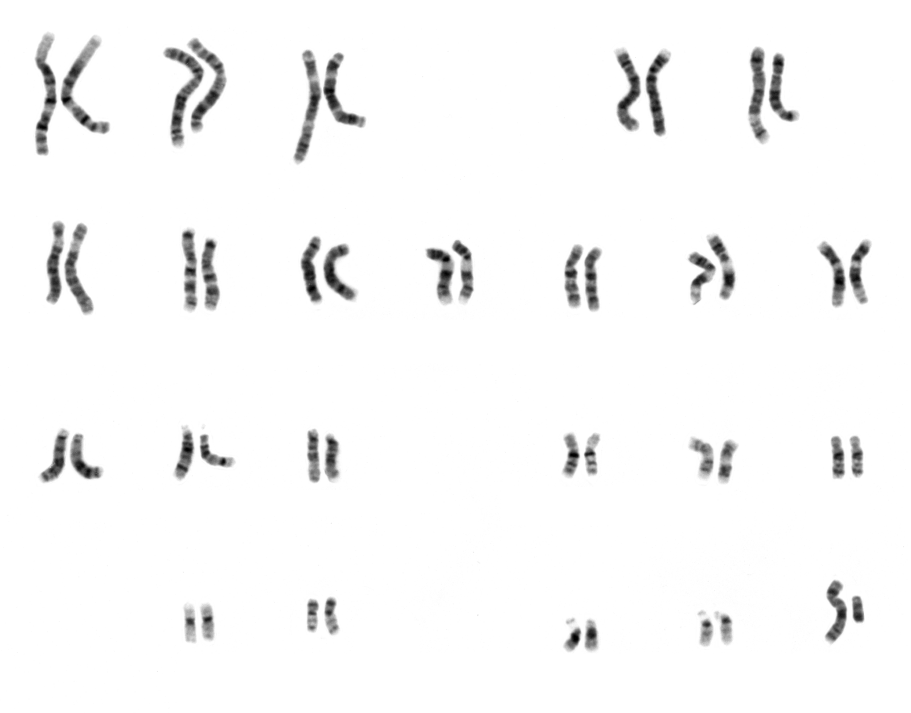
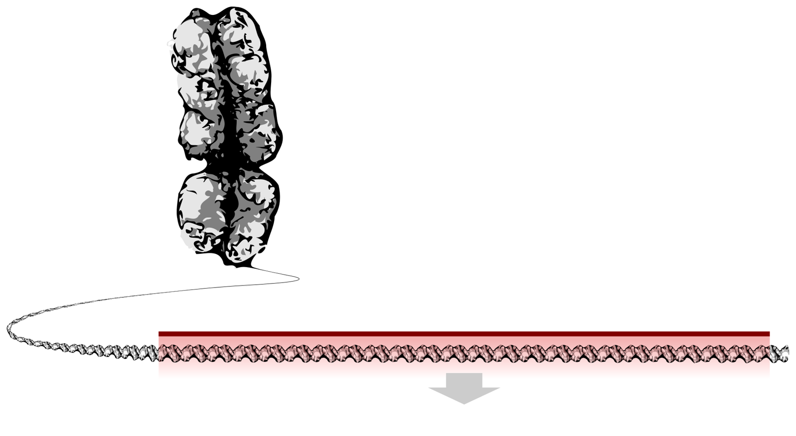

Year 9 Science · Lesson 12 · Practical
DNA
What it is, and how to pull it out of a kiwifruit
Ivar Leidus. CC BY-SA 4.0

Starter
Nearly every cell in your body carries the instructions for making all of you
Last lesson: where in the cell are those instructions kept?
In the nucleus
They are written in a molecule called DNA.
Key facts
DNA
DNA is the molecule that carries the instructions for making an organism: how it develops, survives and reproduces.
- It is found in the nucleus of plant, animal and fungal cells.
- It can make copies of itself, with help from the cell. That's how it gets passed from cell to cell, and from parents to offspring.
- It has been copied and passed on, generation after generation, for 3.5 billion years.
Its shape
A twisted ladder: the double helix
The sides of the ladder are two long strands, twisted around each other.
The rungs are pairs of chemicals called bases. There are four: A, T, C and G. A always pairs with T; C always pairs with G.
Lab manual p25
Packed into 46 chromosomes
Each human cell has 46 chromosomes. Each chromosome is one very long DNA molecule, coiled up tightly.
Twist a piece of string and keep twisting: you get coils, then coils of coils. DNA is packed like that, many times over.
The 46 come in 23 pairs. In each pair, one came from your mother and one from your father.


Estimate it
How long is all your DNA?
Stretched out, the DNA in one cell is about 2 m long. You have about 37 trillion cells.
2 m × 37 000 000 000 000 = 74 000 000 000 000 m = 74 billion km
The Sun is 150 million km away. Your DNA could stretch there and back about 250 times.
All of that fits inside you, because it is so thin and so tightly coiled.
Key word
Genes


A gene is a section of DNA that codes for a characteristic (a trait).
Humans have about 20 000 genes: for eye colour, for the protein that carries oxygen in your blood, and much more.
If a gene's trait gives an advantage, that trait is an adaptation.
Practical · Lab manual p25
Extracting DNA from kiwifruit
Kiwifruit is soft, has thousands of cells, and each cell holds six copies of each set of chromosomes. Lots of DNA to collect.
Safety
- Ethanol and isopropanol are flammable. Keep them away from flames and heat.
- Wear safety glasses.
- Don't eat the kiwifruit or taste any solution.
Materials
- Kiwifruit
- Ziplock bag
- Extraction solution
- Coffee filter and beaker
- Cold 95% ethanol or isopropanol
- Boiling tube
- Wooden skewer or glass rod
Lab manual p26
Protocol
- Peel and cut one kiwifruit into six pieces, leaving out the white core. Put them in the bag.
- Add 20 mL of extraction solution. Squeeze out the air, seal, and gently massage for about 5 minutes.
- Pour the mixture through a coffee filter into a very clean beaker. Be patient; don't squeeze it.
- Put 2 mL of the filtered liquid in a boiling tube. Gently pour about 3 mL of cold ethanol down the side.
- Wait a few minutes and observe. Take a photo.
- Spool the DNA onto a skewer.
Lab manual p27 Q2 and Q3
What does each step do?
| Step | Why |
|---|---|
| Mashing | Breaks the fruit apart and opens up the cells. |
| Extraction solution | Detergent breaks down the fatty membranes around the cell and the nucleus, letting the DNA out. Salt helps the DNA clump together. |
| Filtering | Removes the bits of cell, leaving DNA in the liquid. |
| Cold ethanol | DNA doesn't dissolve in ethanol, so it comes out as white threads where the two layers meet. |
Extraction means taking something out.
Observations
What are you looking at?
The white, cloudy threads are millions of DNA molecules clumped together.
One DNA molecule is far too thin to see, even with a school microscope. You can't see the double helix, only the tangle.
The same molecule is in you. Every living thing uses DNA with the same four bases. That shared code is strong evidence that all life is related.
Exit question
Four quick answers
- Where is DNA found in a cell? In the nucleus.
- What is the name of DNA's twisted ladder shape? Double helix.
- What is the purpose of DNA? It carries the instructions for making an organism.
- What is a gene? A section of DNA that codes for a characteristic.
Away today?
Missed this lesson? Catch up here
- Copy the key facts about DNA (slide 3) and the definition of a gene (slide 7).
- Draw the double helix and label the two strands and the base pairs.
- Lab manual p27: sketch where DNA is found in a cell, and answer Q2 and Q3 using slide 10.
- Exit question: answer the four questions on slide 12 without looking.